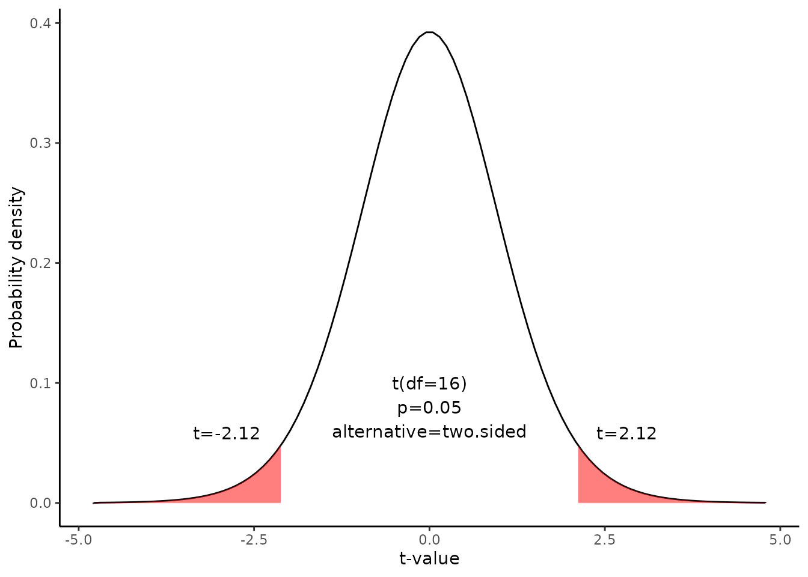

Confidence interval for the paired mean difference
Source:vignettes/Confidence_interval_for_paired_mean_difference.Rmd
Confidence_interval_for_paired_mean_difference.RmdThis document is prepared automatically using the following R command.
library(interpretCI) |
Problem
From a population of 1700 students,17 students were randomly selected. The sampling method was simple random sampling. All of the students were given a standardized English test and a standardized math test. Test results are summarized below.
English [1] 83.8 83.3 86.0 82.5 86.7 79.6 76.9 94.2 73.4 80.5 81.6 82.1 77.6 83.5 89.9
[16] 86.0 87.3math [1] 95.2 94.3 91.5 91.9 100.3 76.7 76.8 101.6 94.9 75.2 77.8 95.5
[13] 90.7 92.5 93.8 91.7 98.0Find the 95% confidence interval for the mean difference between student scores on the math and English tests. Assume that the mean differences are approximately normally distributed.
\[\sum(d-\bar{d})^2=819.66\] \[\bar{d}=-7.26\]
Solution
The approach that we used to solve this problem is valid when the following conditions are met.
The sampling method must be simple random sampling. This condition is satisfied; the problem statement says that we used simple random sampling.
The sampling distribution should be approximately normally distributed. The problem statement says that the differences were normally distributed; so this condition is satisfied.
Since the above requirements are satisfied, we can use the following four-step approach to construct a confidence interval.
Identify a sample statistic.
Standard deviation(\(s_d\))
To solve the problem, we have to calculate standard deviation of the differences(\(s_d\)) computed from differences in English and math score from 17 matched pairs.
Prior |
Post |
d |
(d-mean(d)^2 |
83.8 |
95.2 |
-11.4 |
17.1006574 |
83.3 |
94.3 |
-11.0 |
13.9524221 |
86.0 |
91.5 |
-5.5 |
3.1141869 |
82.5 |
91.9 |
-9.4 |
4.5594810 |
86.7 |
100.3 |
-13.6 |
40.1359516 |
79.6 |
76.7 |
2.9 |
103.3212457 |
76.9 |
76.8 |
0.1 |
54.2388927 |
94.2 |
101.6 |
-7.4 |
0.0183045 |
73.4 |
94.9 |
-21.5 |
202.6435986 |
80.5 |
75.2 |
5.3 |
157.8718339 |
\[s_d=\sqrt{\frac{\sum{(d_i-\bar{d})^2}}{n-1}}\]
\[s_d=\sqrt{\frac{819.66}{17-1}}=7.16\]
where \(d_i\) is the difference for pair i, \(\bar{d}\) is the sample mean of the differences, and \(n\) is the number of paired values.
standard error(SE)
Standard error. Compute the standard error (SE) of the sampling distribution of d.
\[SE = s_d \times \sqrt{ ( 1/n )\times [ (N - n) / ( N - 1 ) ] }\]
where \(s_d\) is the standard deviation of the sample difference, \(N\) is the number of matched pairs in the population, and \(n\) is the number of matched pairs in the sample. When the population size is much larger (at least 20 times larger) than the sample size, the standard error can be approximated by:
\[SE = \frac{s_d}{\sqrt{n}}=\frac{7.16}{\sqrt{17}}=1.74\]
Select a confidence level.
In this analysis, the confidence level is defined for us in the problem. We are working with a 95% confidence level. The critical probability(p*) is:
\[p*=1-\alpha/2=1-0.05/2=0.975\]
Find critical value
The critical value is the \(t\) statistic having 16` degrees of freedom and a cumulative probability equal to 0.95. From the t Distribution table, we find that the critical value is 2.12.
df |
0.400 |
0.250 |
0.100 |
0.050 |
0.025 |
0.010 |
0.005 |
0.001 |
14 |
-0.258 |
-0.692 |
-1.345 |
-1.761 |
-2.145 |
-2.624 |
-2.977 |
-3.787 |
15 |
-0.258 |
-0.691 |
-1.341 |
-1.753 |
-2.131 |
-2.602 |
-2.947 |
-3.733 |
16 |
-0.258 |
-0.690 |
-1.337 |
-1.746 |
-2.120 |
-2.583 |
-2.921 |
-3.686 |
17 |
-0.257 |
-0.689 |
-1.333 |
-1.740 |
-2.110 |
-2.567 |
-2.898 |
-3.646 |

Confidence level
The range of the confidence interval is defined by the sample statistic \(\pm\)margin of error. And the uncertainty is denoted by the confidence level.
Confidence interval of the mean difference
Therefore, the 95% confidence interval is -10.94 to -3.58. Here’s how to interpret this confidence interval. Suppose we repeated this study with different random samples for men and women. Based on the confidence interval, we would expect the observed difference in sample means to be between -10.94 and -3.58 95% of the time.
Result of meanCI()
call: meanCI.data.frame(x = Anorexia, Prior, Post, paired = TRUE)
method: Paired t-test
alternative hypothesis:
true paired differences in means is not equal to 0
Results
[38;5;246m# A tibble: 1 × 6
[39m
control test DF CI t p
[3m
[38;5;246m<chr>
[39m
[23m
[3m
[38;5;246m<chr>
[39m
[23m
[3m
[38;5;246m<chr>
[39m
[23m
[3m
[38;5;246m<chr>
[39m
[23m
[3m
[38;5;246m<chr>
[39m
[23m
[3m
[38;5;246m<chr>
[39m
[23m
[38;5;250m1
[39m Prior Post 16 -7.26 [95CI -10.94; -3.58] -4.1849 0.0007003Reference
The contents of this document are modified from StatTrek.com. Berman H.B., “AP Statistics Tutorial”, [online] Available at: https://stattrek.com/estimation/mean-difference-pairs.aspx?tutorial=AP URL[Accessed Data: 1/23/2022].